ALE Support for object having a large rigid body motion¶
ALE terms for rotating objects¶
This section present a set of bricks facilitating the use of an ALE formulation for rotating bodies having a rotational symmetry (typically a train wheel).
Theoretical background¶
This strategy consists in adopting an intermediary description between an Eulerian and a Lagrangian ones for a rotating body having a rotational symmetry. This intermediary description consist in a rotating axes with respect to the reference configuration. See for instance [Dr-La-Ek2014] and [Nackenhorst2004].
It is supposed that the considered body is submitted approximately to a rigid body motion
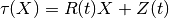
and may have additonal deformation (exptected smaller) with respect to this rigid motion, where 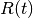 is a rotation matrix
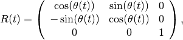
and 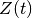 is a translation. Note that, in order to be consistent with a positive translation for a positive angle for a rolling contact, the rotation is clockwise. This illustrated in the following figure:
{kind=link}
Note that the description is given for a three-dimensional body. For two-dimensional bodies, the third axes is neglected so that is a 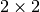 rotation matrix. Let us denote 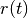 the rotation:
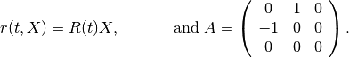
We have then
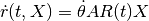
If 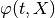 is the deformation of the body which maps the reference configuration 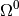 to the deformed configuration  at time 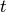, the ALE description consists in the decomposition of the deformation of the cylinder in
at time 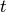, the ALE description consists in the decomposition of the deformation of the cylinder in
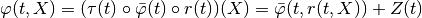
With 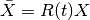 the new considered deformation is
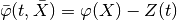
Thanks to the rotation symmetry of the reference configuration 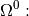, we note that 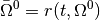 is independant of and will serve as the new reference configuration. This is illustrated in the following figure:

The denomination ALE of the method is justified by the fact that 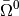 is an intermediate configuration which is of Euler type for the rigid motion and a Lagrangian one for the additional deformation of the solid. If we denote
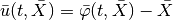
the displacement with respect to this intermediate configuration, the advantage is that if this additional displacement with respect to the rigid body motion is small, it is possible to use a small deformation model (for instance linearized elasticity).
Due to the objectivity properties of standard consistutive laws, the expression od these laws in the intermediate configuration is most of the time identical to the expression in a standard reference configuration except for the expression of the time derivative which are modified because the change of coordinate is nonconstant in time :
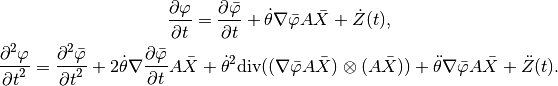
Note that the term 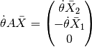 is the rigid motion velocity vector. Now, If 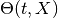 is a quantity attached to the material points (for instance the temperature), then, with 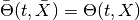 , one simply has
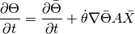
This should not be forgotten that a correction has to be provided for each evolving variable for which the time derivative intervene in the considered model (think for instance to platic flow for plasticity). So that certain model bricks canot be used directly (plastic bricks for instance).
GetFEM++ bricks for structural mecanics are mainly considering the displacement as the amin unknown. The expression for the displacement is the following:
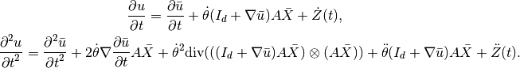
Weak formulation of the transient terms¶
Assuming 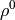 the density in the reference configuration having a rotation symmetry, the term corresponding to acceleration in the weak formulation reads (with 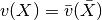 a test function):
![\int_{\Omega^0} \rho^0 \Frac{\partial^2 u}{\partial t^2}\cdot vdX =
\int_{\bar{\Omega}^0} \rho^0 \left[\Frac{\partial^2 \bar{u}}{\partial t^2} + 2\dot{\theta} \nabla\Frac{\partial \bar{u}}{\partial t}A \bar{X} + \dot{\theta}^2\mbox{div}(((I_d + \nabla\bar{u})A \bar{X}) \otimes (A \bar{X}) ) + \ddot{\theta} (I_d + \nabla\bar{u}) A \bar{X} + \ddot{Z}(t) \right] \cdot \bar{v} d\bar{X}.](../_images/math/26bec020092e79cf6d8b094e61a18ecdba5819c0.png)
The third term in the right hand side can be integrated by part as follows:
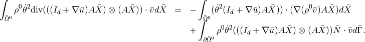
Since 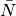 the outward unit normal vector on 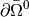 is orthogonal to 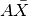 the boundary term is zero and 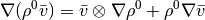 and since 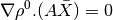 because of the assumption on to have a rotation symmetry, we have
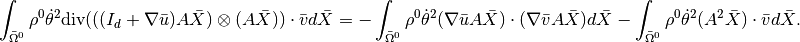
Thus globally
![\begin{array}{rcl}
\ds \int_{\Omega^0} \rho^0 \Frac{\partial^2 u}{\partial t^2}\cdot vdX &=&
\ds \int_{\bar{\Omega}^0} \rho^0 \left[\Frac{\partial^2 \bar{u}}{\partial t^2} + 2\dot{\theta} \nabla\Frac{\partial \bar{u}}{\partial t}A \bar{X} + \ddot{\theta} \nabla\bar{u} A \bar{X} \right] \cdot \bar{v} d\bar{X}\\
&&\ds - \int_{\bar{\Omega}^0} \rho^0 \dot{\theta}^2(\nabla\bar{u}A \bar{X}) \cdot (\nabla \bar{v} A \bar{X}) d\bar{X} - \int_{\bar{\Omega}^0} \rho^0 (\dot{\theta}^2 A^2 \bar{X} + \ddot{\theta} A\bar{X} + \ddot{Z}(t))\cdot \bar{v} d\bar{X}.
\end{array}](../_images/math/91873dc4cc372d07188168cbb5a7155e76a1b032.png)
Note that two terms can deteriorate the coercivity of the problem and thus its well posedness and the stability of time integration schemes: the second one (convection term) and the fifth one. This may oblige to use additional stabilization techniques for large values of the angular velocity 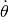.
The available bricks ...¶
To be adapted
ind = getfem::brick_name(parmeters);
where parameters are the parameters ...
ALE terms for a uniformly translated part of an object¶
This section present a set of bricks facilitating the use of an ALE formulation for an object being potentialy infinite in one direction and which whose part of interests (on which the computation is considered) is translated uniformly in that direction (typically a bar).
Theoretical background¶
Let us consider an object whose reference configuration 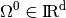 is infinite in the direction 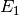, i.e. 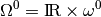 where 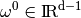. At a time , only a “windows” of this object is considered
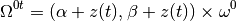
where 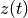 represents the translation.
If is the deformation of the body which maps the reference configuration to the deformed configuration at time , the ALE description consists in considering the intermediary reference configuration
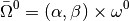
and 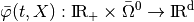 defined by
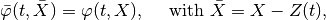
where 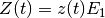. The interest of is of course to be time independant. Of course, some special boundary conditions have to be defined on 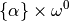 and 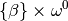 (absorbing or periodic boundary conditions) in order to approximate the fact that the body is infinite.
{kind=link}
If we denote
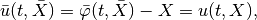
the displacement on the intermediary configuration, then it is easy to check that
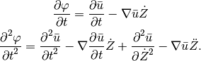
Weak formulation of the transient terms¶
Assuming the density in the reference being invariant with the considered translation, the term corresponding to acceleration in the weak formulation reads (with a test function and after integration by part):
where is the outward unit normal vector on . Note that the last term vanishes on but not necessarily on and .

目次
前のトピックへ
次のトピックへ
Appendix A. Finite element method list
Download
Main documentations
- GetFEM++ User documentation
- Python Interface
- Matlab Interface
- Scilab Interface
- Gmm++
- GetFEM++ project